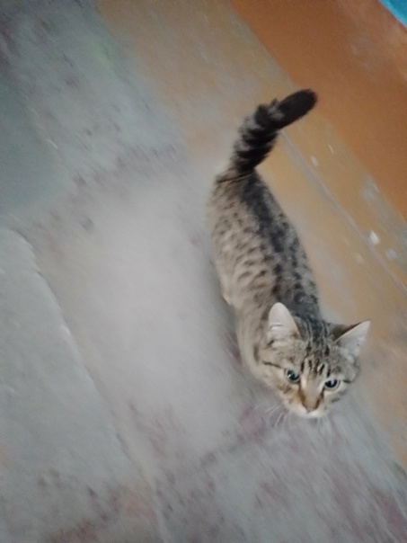
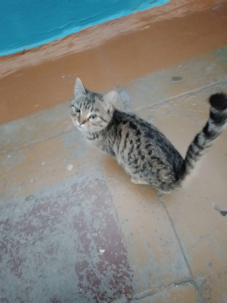
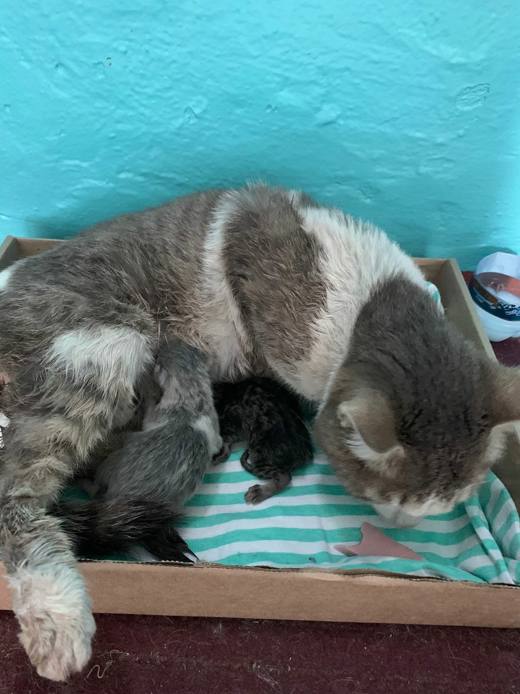
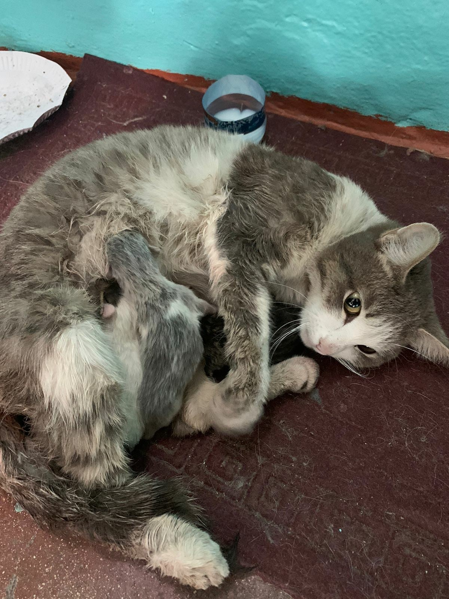
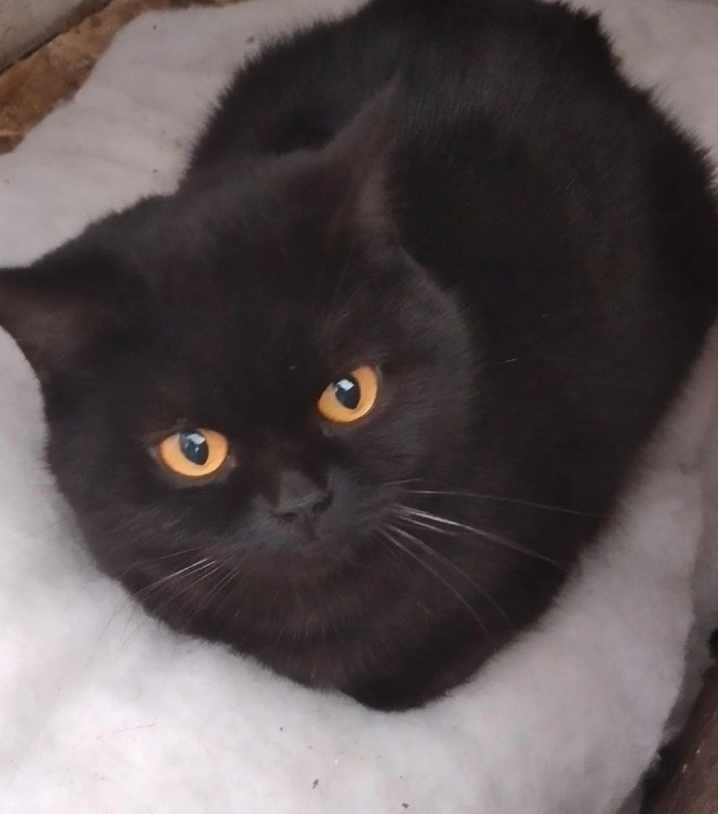
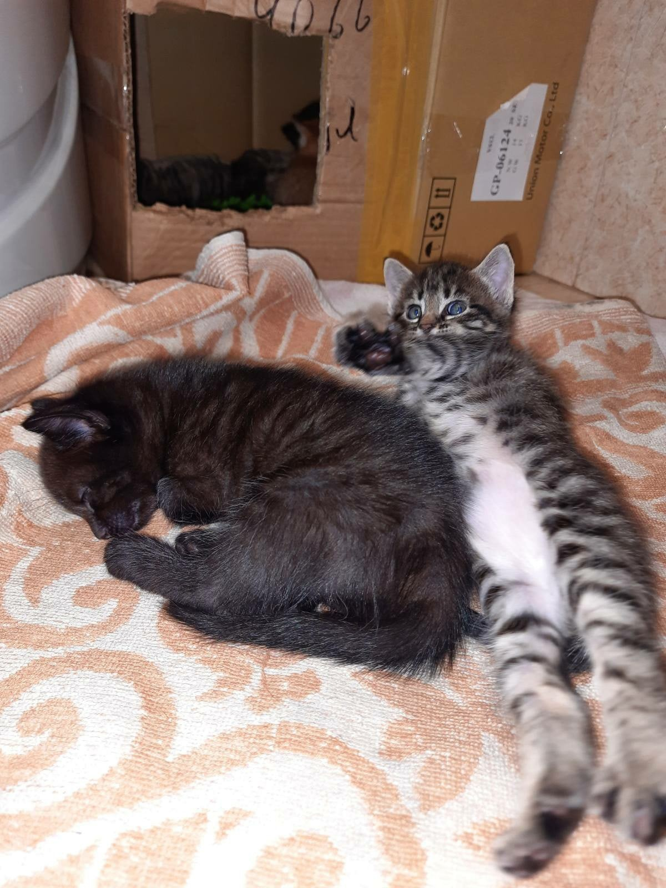
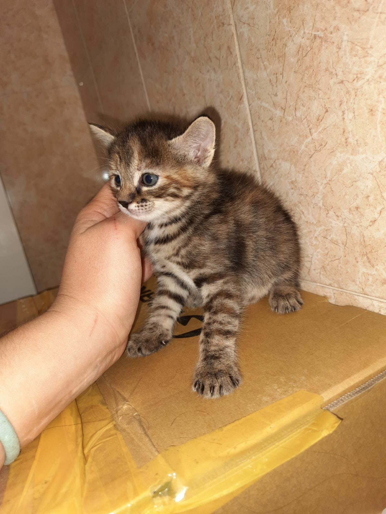

В подьезд подкинули котенка. Девочка, очень ласковая. Малышка может оказаться на улице. Поможем малышке найти любящую семью.
☎ +79149898206 Ольга.
7 ноября 2022
 Кошка с котятами.
☎ 8-983-427-70-36, Юлия
30 октября 2022
 Кошечка по имени Джипси, шотланская, прямоухая, не стерилизована, 2 года, с характером.
☎ 8914-980-40-27, Наталья.
7 ноября 2022
Котята 1.5 месяца, к лотку приучены. Две девочки-полосатые, два мальчика-чёрные. Пожалуйста, пишите и звоните.
☎ 8-983-425-9954 Дарья
8 ноября 2022
 